Practice Log n Share
Сентябрь 2026
Обзор
Записывать занятия одним касанием, а на уроке показывать преподавателю тот же экран. Я задумал и спроектировал это приложение для iPhone для собственных занятий на саксофоне и реализовал его совместно с ИИ.


- Моя роль
- Концепция, UX/UI-дизайн и реализация (совместно с Claude Code и Codex)
- Период
- Сентябрь 2026
- Технологии
- React · TypeScript; Swift (WKWebView, Live Activity, StoreKit, iCloud)
Попробовать веб-демо (содержит мои записи занятий по состоянию на 20 сентября 2026 года)
Отправная точка — «Как идут занятия?»: я не мог ответить
На уроках раз в две недели ответ «в основном гаммы» не объяснял, что именно и сколько я практиковал. Писать в бумажном дневнике с саксофоном на шее неудобно, а опробованные приложения учёта времени были рассчитаны на самостоятельный просмотр записей.

Запись — С инструментом в руках, одним касанием
Во время занятий я касаюсь только карточек категорий. Касание запускает таймер, другая карточка переключает категорию, повторное касание той же останавливает отсчёт.
- 1 История
- Все занятия до этого момента. Первое, что видно при открытии.
- 2 Сегодня
- Порядок и распределение занятий. Заполняется за час.
- 3 Идёт отсчёт
- Только эта карточка светлая и обведена белым.
- 4 Карточки
- Касание переключает. Время за сегодня показано крупно.
Один день — Заполненная полоса остаётся заполненной
Полоса за сегодня заполняется за час. После этого правую границу задаёт текущая суммарная длительность, чтобы в уже полной полосе снова не возникала пустота.
Занятия сегодня — 1 ч 05 мин
Выбрано
Отклонено
Накопление — Всё видно с самого первого дня
Насыщенность зелёного показывает занятия, красные рамки отмечают уроки. По горизонтали можно вернуться к первому дню записи. Возможность просматривать годы занятий я поставил выше лёгкости отрисовки.

Показ итогов — В начале урока одного экрана достаточно
Итоги по категориям и разбивка по дням охватывают период с последнего урока по сегодня — их можно сразу показать преподавателю. В ежедневную таблицу я вместил все категории на одном экране, даже ценой уменьшения шрифта, убрав горизонтальную прокрутку.

Развитие — Карточки как панель управления занятиями
Я построил экраны по спецификации, составленной в диалоге с ИИ, и многократно пробовал и исправлял их сам. В ранней веб-версии исследовал запись и показ итогов, затем реализовал приложение для iPhone.

9 сентября
Первая версия

21 сентября
Веб-версия
24 сентября
iOS 1.0
- Название и время вместе
- Я крупно разместил время за сегодня на карточке, связав содержание занятий с их длительностью.
- Текущее состояние с первого взгляда
- Сделал светлой только карточку с работающим таймером, приглушив остальные.
- Управление в пределах экрана
- Прокрутка останавливается там, где ряд карточек целиком помещается на экране.
Ближе к концу я около 15 раз повторил цикл: Claude Code предлагал возможные проблемы, Codex проверял и исправлял их, а я решал, какие изменения принять.
Ощущение — Выбрать характер остановки на практике
Одних слов было мало, чтобы добиться ощущения «плавно движется и чётко останавливается». Вместе с ИИ я создал инструмент для мгновенного переключения способов и параметров, сравнил пять способов на реальном устройстве и выбрал встроенную привязку прокрутки браузера.
Модель с горбом

Прогноз конечной точки

Встроенный proximity
Выбрано

Встроенный mandatory

Без привязки


Как продукт — За пределами занятий
Оформление следует настройкам устройства. Записи хранятся на устройстве и автоматически копируются в iCloud.

В использовании — Следующий вопрос: насколько подробно записывать
Я пользовался приложением во время утренних занятий и показал экран преподавателю на уроке. Он отметил, что содержание занятий понятно с первого взгляда и что запись видов гамм сделала бы приложение ещё полезнее (пересказ). Рассматриваю дополнительный уровень под категориями, чтобы сохранять больше деталей без усложнения записи.
Материалы
Веб-демо позволяет попробовать запись и показ итогов. Оно содержит мои записи занятий по состоянию на 20 сентября 2026 года; изменения сохраняются только в используемом браузере.